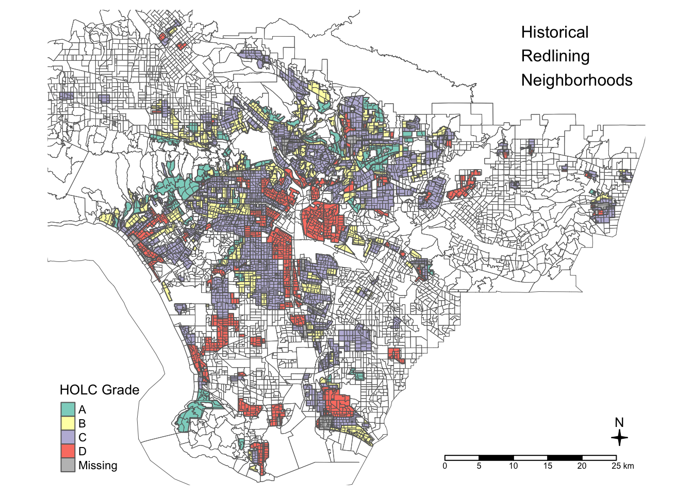
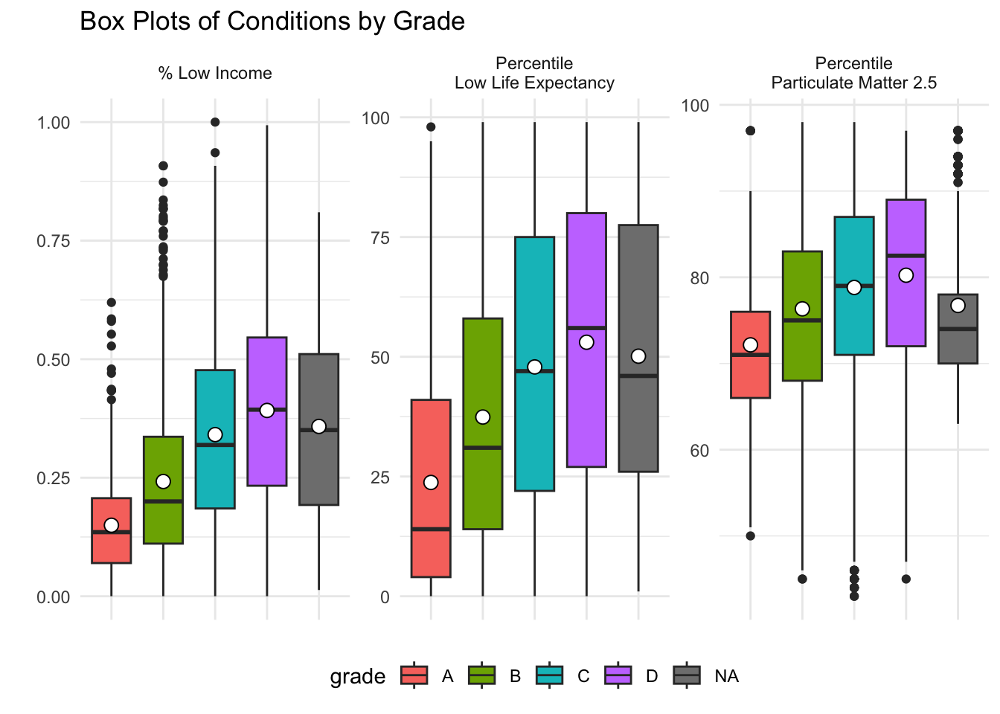
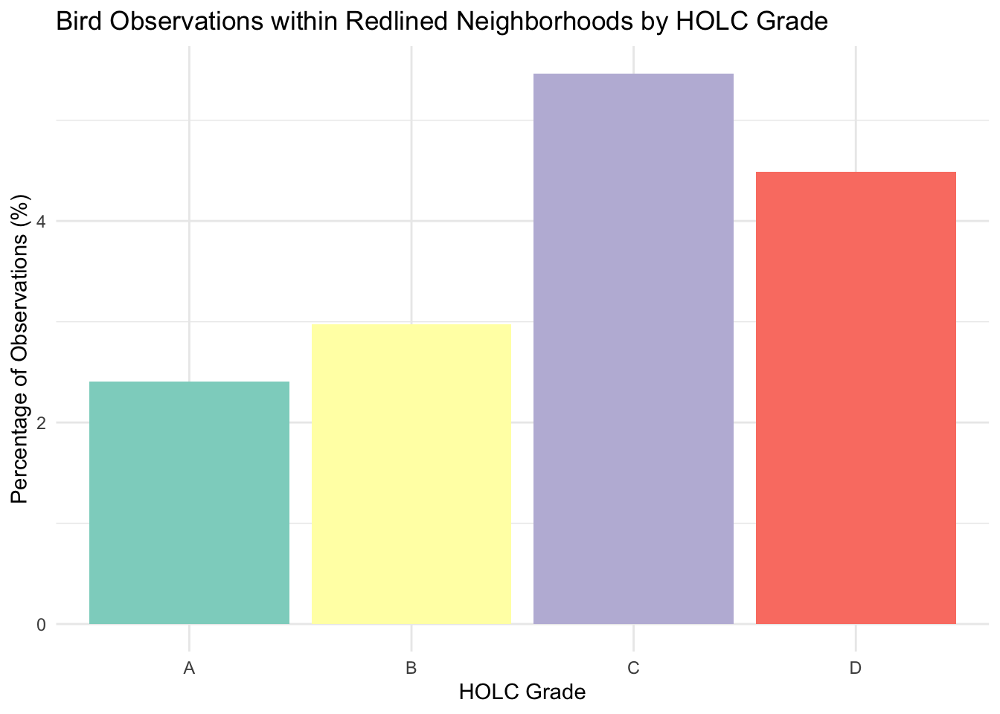

suppressMessages(library(sf))
suppressMessages(library(here))
suppressMessages(library(tmap))
suppressMessages(library(dplyr))
suppressMessages(library(tidyr))
suppressMessages(library(knitr))
suppressMessages(library(kableExtra))
suppressMessages(library(ggplot2))Homework Assignment #2
Exploring patterns of environmental justice
Load libraries
Read in data and transform crs
Make sure data has the same crs
# Save crs of each dataset
crs1 <- st_crs(ejscreen)
crs2 <- st_crs(holc)
crs3 <- st_crs(biodiversity)
# Compare crs of each dataset with if/elif/else statement
if (identical(crs1, crs2) && identical(crs1, crs3)) {
print("All datasets have the same CRS!")
} else if (is.null(crs1) || is.null(crs2) || is.null(crs3)) {
print("One or more datasets do not have a defined CRS!")
} else if (identical(crs1, crs2) || identical(crs1, crs3) || identical(crs2, crs3)) {
print("At least two datasets have the same CRS!")
} else {
print("All datasets have different CRS!")
}[1] "All datasets have the same CRS!"# Identify class of variable
class(holc$grade)[1] "character"Part 1: Legacy of redlining in current environmental (in)justice
# Make geometries valid
holc <- st_make_valid(holc)
# Set tmap mode to plot
tmap_mode("plot")tmap mode set to plotting# Create map
map <- tm_shape(holc) +
tm_fill("grade",
title = "HOLC Grade") + # Legend title
tm_borders() +
tm_shape(la_ejscreen) +
tm_borders(lwd = 0.5) + # Border width
tm_layout(title = "Historical\nRedlining\nNeighborhoods", # Title
title.position = c("right", "top"),
legend.position = c("left", "bottom"),
legend.title.size = 1.0,
title.size = 1.0,
frame = FALSE) + # Eliminate frame
tm_compass(position = c("right", "bottom"), type = "4star", size = 1) + # Compass
tm_scale_bar(position = c("right", "bottom")) # Scale bar
# Print map
print(map)
# Summary
holc_summary <- holc %>% # Data
mutate(grade = ifelse(is.na(grade), "None", grade)) %>% # Mutate NA to None
group_by(grade) %>% # Group by grade
summarise(count = n(), # Count total
percent = (count / nrow(holc)) * 100, # Calculate percent
.groups = 'drop') %>% # Keep regular data frame
select(grade, count, percent) %>% # Select
st_drop_geometry() # Remove geometry from output table
# Display summary table
holc_summary %>%
kable(format = "html", caption = "Summary of HOLC Grades") %>% # Format
kable_styling("striped", full_width = F) # Style| grade | count | percent |
|---|---|---|
| A | 57 | 13.6690647 |
| B | 121 | 29.0167866 |
| C | 167 | 40.0479616 |
| D | 71 | 17.0263789 |
| None | 1 | 0.2398082 |
# Join data for mean by grade
joined_data <- st_join(holc, la_ejscreen, join = st_intersects)# Transform data to plot
long_data <- joined_data %>%
select(grade, LOWINCPCT, P_PM25, P_LIFEEXPPCT) %>%
pivot_longer(cols = c(LOWINCPCT, P_PM25, P_LIFEEXPPCT),
names_to = "variable",
values_to = "percentile")
# Create box plots
ggplot(long_data, aes(x = grade, y = percentile, fill = grade)) +
geom_boxplot() +
stat_summary(fun = mean,
geom = "point",
color = "black",
size = 3,
shape = 21,
fill = "white") + # Add mean point
labs(title = "Box Plots of Conditions by Grade",
x = "Grade",
y = "") +
facet_wrap(~ variable,
scales = "free_y",
labeller = as_labeller(c(
LOWINCPCT = "% Low Income",
P_PM25 = "Percentile\nParticulate Matter 2.5",
P_LIFEEXPPCT = "Percentile\nLow Life Expectancy"
))) +
theme_minimal() +
theme(axis.text.x = element_blank(), # Remove x-axis text
axis.title.x = element_blank(), # Remove x-axis title
legend.position = "bottom")Warning: Removed 294 rows containing non-finite outside the scale range
(`stat_boxplot()`).Warning: Removed 294 rows containing non-finite outside the scale range
(`stat_summary()`).
# Calculate means for specified variables
conditions_summary <- joined_data %>%
group_by(grade) %>%
summarise(
mean_low_income = mean(LOWINCPCT, na.rm = TRUE),
mean_particulate_matter = mean(P_PM25, na.rm = TRUE),
mean_low_life_expectancy = mean(P_LIFEEXPPCT, na.rm = TRUE),
.groups = 'drop'
) %>%
rename(
"% Low Income" = mean_low_income,
"% Particulate Matter" = mean_particulate_matter,
"% Low Life Expectancy" = mean_low_life_expectancy
) %>%
select(grade, `% Low Income`, `% Particulate Matter`, `% Low Life Expectancy`) %>%
st_drop_geometry()
#
conditions_summary %>%
kable(format = "html", caption = "Summary of Conditions by Grade") %>%
kable_styling("striped", full_width = F, position = "center") %>%
add_header_above(c(" " = 1, "Mean Values" = 3))| grade | % Low Income | % Particulate Matter | % Low Life Expectancy |
|---|---|---|---|
| A | 0.1497511 | 72.16036 | 23.75982 |
| B | 0.2420120 | 76.33898 | 37.42025 |
| C | 0.3408981 | 78.81884 | 47.88017 |
| D | 0.3919059 | 80.23700 | 53.03621 |
| NA | 0.3581823 | 76.72973 | 50.12409 |
Part 2: Legacy of redlining in biodiversity observations
# Perform spatial join to associate bird observations with HOLC grades
observations_holc <- st_join(biodiversity_22, holc, join = st_intersects) # Save total observations, including NAs
total_observations <- nrow(observations_holc)
# Filter redlined observations
redlined_observations <- observations_holc %>%
filter(!is.na(grade)) %>%
group_by(grade) %>%
summarise(redlined_count = n(), .groups = 'drop') %>%
mutate(total_count = total_observations,
percent_redlined = (redlined_count/total_count) * 100)
# Create a bar plot
ggplot(redlined_observations, aes(x = grade, y = percent_redlined, fill = grade)) +
geom_bar(stat = "identity") +
labs(title = "Bird Observations within Redlined Neighborhoods by HOLC Grade",
x = "HOLC Grade",
y = "Percentage of Observations (%)") +
scale_fill_brewer(palette = "Set3") +
theme_minimal() +
theme(legend.position = "none")
# Create summary
summary <- redlined_observations %>%
select(grade, redlined_count, total_count, percent_redlined) %>%
rename(
"Redlined count" = redlined_count,
"Total count" = total_count,
"Percent redlined" = percent_redlined
) %>%
st_drop_geometry()
# View summary
summary %>%
kable(format = "html", caption = "Summary of Redlined Observations by Grade") %>% # Format
kable_styling("striped", full_width = F, position = "center") %>% # Style
add_header_above(c(" " = 1, "Counts" = 2, "Percentage" = 1)) # Label| grade | Redlined count | Total count | Percent redlined |
|---|---|---|---|
| A | 1073 | 44641 | 2.403620 |
| B | 1329 | 44641 | 2.977084 |
| C | 2439 | 44641 | 5.463587 |
| D | 2004 | 44641 | 4.489147 |